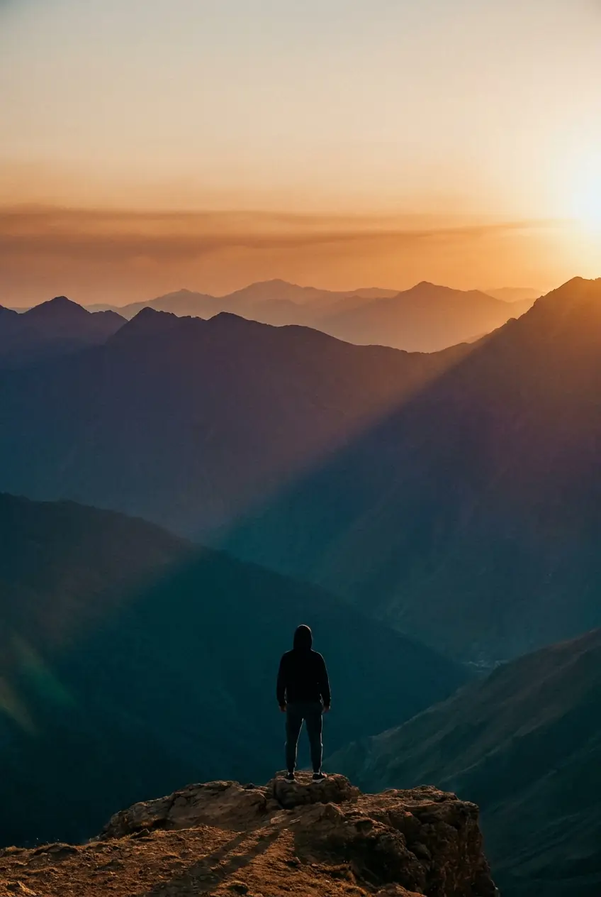
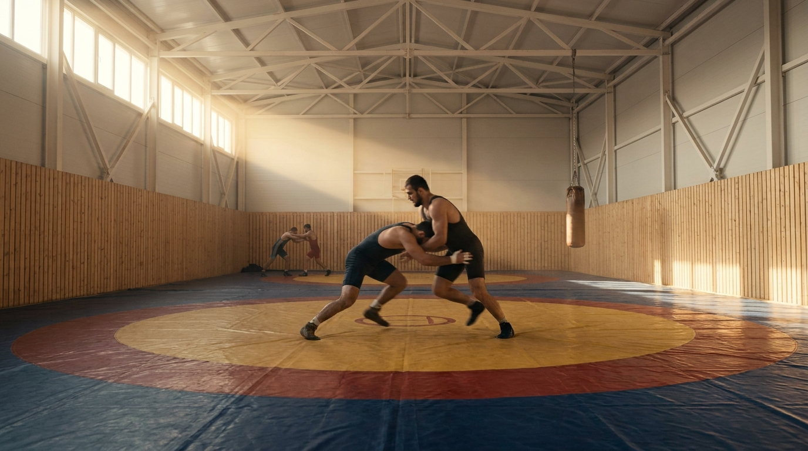
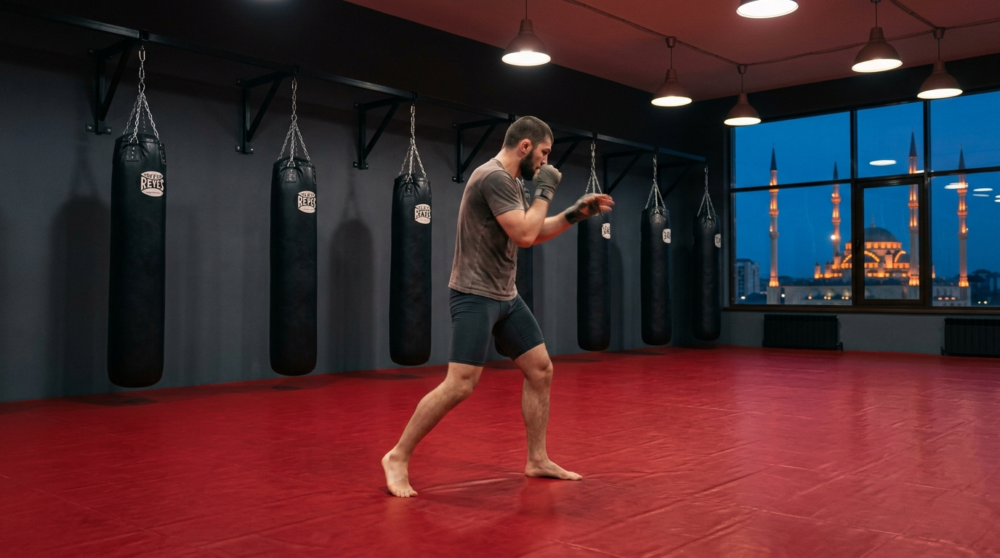

Tu tiens entre les mains tout ce que j aurais voulu avoir avant mon premier voyage au Caucase. Pas une brochure marketing. Un manuel.
J ai grandi entre la France et le Daghestan. Des deux cotes, j ai vu la meme chose : des combattants serieux qui voulaient venir s entrainer ici mais qui se cassaient les dents sur la logistique. Le visa qui traine. Les vols qu on prend mal. Le budget qu on sous-estime. Le doute la veille du depart.
MKR Caucasian Camp est ne pour resoudre ca. On organise tout : les vols interieurs, les transferts, l hebergement, les coachs locaux, les salles. Tu n as plus qu une chose a faire : t entrainer.
Ce guide raconte le reste. Ce que personne ne te dit. Ce qu il faut preparer chez toi avant de venir. Ce que tu vas trouver sur place. C est sec, c est honnete, c est sans filtre. A l image du Caucase.
Bienvenue. Maintenant, prepare-toi.
Ruslan Mukhtarov
Fondateur, MKR Caucasian Camp
| Le Caucase en chiffres | p. 04 |
| DAGHESTAN Pourquoi la lutte y domine le monde | p. 06 |
| TCHETCHENIE Pourquoi le MMA y a explose | p. 07 |
| Visa Russie pas a pas | p. 08 |
| Vols : itineraire et conseils | p. 10 |
| Budget complet | p. 12 |
| Preparation physique en 6 semaines | p. 13 |
| Preparation mentale | p. 15 |
| Equipement complet | p. 16 |
| Sur place : journee type | p. 17 |
| Culture et immersion | p. 18 |
| Temoignages d anciens | p. 19 |
| Prochaines etapes | p. 20 |
Deux republiques de la Federation de Russie, accolees, distinctes. Deux ecoles de combat dont la planete entiere recolte les graines.
Le Daghestan compte plus de trente nations dans une seule republique. L avar, le lak, le dargin, le lezghien y cohabitent. La Tchetchenie est plus homogene : la langue tchetchene domine, l islam structure les rythmes du quotidien. Les deux republiques sont musulmanes, hospitalieres, exigeantes.
Capitale Makhachkala, ville cotiere sur la mer Caspienne. C est ici que tu viens t entrainer a la lutte. Salles a Makhachkala et a Kaspiysk, le coeur de l ecole daghestanaise.
Capitale Grozny, ville reconstruite depuis 2009, gratte-ciels et mosquees neuves. C est ici que tu viens t entrainer au MMA. Salle moderne, equipement haut niveau, cadre rigoureux.
Une session officielle egale une discipline egale une destination. Combo Lutte plus MMA possible uniquement en Sur Mesure.


Aucun citoyen UE, CH, BE ou CA ne peut entrer en Russie sans visa. La procedure est standardisee, longue mais previsible. On la fait pour toi a 80 pourcent. Voici les 20 pourcent que tu fais chez toi.
| Pays de demande | Delai standard | Delai express |
|---|---|---|
| France | 5 a 10 jours ouvres | 3 jours (surcout) |
| Suisse | 5 a 10 jours ouvres | 3 jours (surcout) |
| Belgique | 7 a 14 jours ouvres | 4 jours (surcout) |
| Canada | 10 a 20 jours ouvres | 5 jours (surcout) |
Conseil : demarre le visa au minimum 8 semaines avant ton depart.
Si tu galeres, dis-le-nous des l appel visio. On debloque par appel direct au consulat dans 90 pourcent des cas.
Une seule regle : tu voles depuis ta ville europeenne jusqu a Istanbul, puis tu prends un vol interieur turc jusqu a ta destination MKR. Ce dernier vol est inclus dans ton package.
Ta ville (Paris, Geneve, Bruxelles, Lyon, Marseille...) puis Istanbul puis Makhachkala (MCX). Vol intl entre 3 et 6 heures selon le depart. Escale Istanbul de 2 a 6 heures. Vol interieur Istanbul vers Makhachkala de 3 heures.
Ta ville puis Istanbul puis Grozny (GRV). Meme schema. Vol interieur Istanbul vers Grozny de 2 heures 50.
| Compagnie | Depuis | Vers | Prix indicatif |
|---|---|---|---|
| Turkish Airlines | CDG, GVA, BRU | IST | 250 a 450 EUR aller |
| Pegasus Airlines | CDG, ORY, GVA | SAW (Istanbul) | 180 a 350 EUR aller |
| Air France · Swiss | CDG, GVA | IST | 320 a 550 EUR aller |
Note : Pegasus arrive a Sabiha Gokcen (SAW), Turkish a Istanbul Airport (IST). Verifie l aeroport de correspondance pour le vol interieur.
| Periode | Vol aller-retour total | Note |
|---|---|---|
| Aout (haute saison) | 650 a 950 EUR | Plus cher mais meilleur climat |
| Octobre · novembre | 500 a 750 EUR | Bon compromis |
| Fevrier · mars | 450 a 700 EUR | Frais mais moins de monde |
| Avril (Paques) | 550 a 800 EUR | Climat agreable |
On peut t aider a choisir le bon vol pendant la visio de validation. Pas de commission, pas de pression. Juste l experience accumulee sur des dizaines de camps.
Voici ce que coute reellement un voyage MKR. Pas de chiffre cache, pas de surprise au retour. On te donne les fourchettes pour 1, 2 et 3 semaines en solo.
| Poste | 1 semaine | 2 semaines | 3 semaines |
|---|---|---|---|
| Package MKR (vol interieur, hebergement, 2 sessions par jour, 2 repas, coachs, transferts) | 1 490 EUR | 2 290 EUR | 2 790 EUR |
| Vol international aller-retour | 450 a 950 | 450 a 950 | 450 a 950 |
| Visa Russie plus frais consulat | 80 a 150 | 80 a 150 | 80 a 150 |
| Assurance voyage 30k EUR | 30 a 60 | 45 a 90 | 60 a 120 |
| Equipement complementaire | 0 a 200 | 0 a 200 | 0 a 200 |
| Argent de poche (1 repas externe par jour, lessive, souvenirs) | 150 | 300 | 450 |
| Total estime EUR | 2 200 a 2 950 | 3 165 a 3 980 | 3 830 a 4 660 |
Tarifs degressifs publics : 1 390 EUR par adulte pour Trio (3 a 5 personnes), 1 290 EUR par adulte pour Club (6 a 10 personnes), devis personnalise au-dela. Le forfait Famille (1 parent plus 1 enfant inclus) demarre a 2 590 EUR. Voir grille complete sur mkrcamp.com.
Tarifs au 14 mai 2026, susceptibles d evolution. Verifie la grille publique a jour avant d arbitrer ton budget definitif.
Tu ne peux pas debarquer froid. Le rythme MKR c est 2 sessions par jour, 6 jours sur 7, en immersion. Sans une base de prep, tu casses au jour 4. Voici le protocole.
Renforce ton bas du dos, ta chaine posterieure et tes hanches. Drille les sorties d arret, les liaisons sol, la cardio aerobie longue duree.
Garde un volume de striking et de wrestling defense. Travaille les transitions debout-sol. Cardio mixte (court intense plus long modere).
Le corps tient. La tete pas toujours. Voici les 5 chocs auxquels te preparer, et comment les desamorcer avant qu ils te plombent ton camp.
Pas de famille, pas de copains, pas de routine. Les 48 premieres heures, tu te sens largue. C est normal. Accepte-le, vis-le, ca passe.
Heures de priere, codes vestimentaires, alimentation differente. Tu n es pas dans ta zone. Respecte, observe, pose des questions ouvertes. La premiere semaine, tu apprends. Ensuite tu participes.
Au jour 5 ou 6, tu vas avoir une chute de motivation. Elle revient au jour 8. Anticipe-la. Le pire moment n est pas le dernier jour.
Tu vas te faire tapper par des gosses de 14 ans. C est leur metier depuis qu ils marchent. Laisse ton ego a l aeroport. Apprends.
Tu rentres transforme, ta vie d avant n a pas bouge. Prevois un sas de 48 heures avant de reprendre boulot ou famille. Tu auras besoin de digerer.
Le strict necessaire. Le reste, on l a sur place ou tu le trouves sur place.
Si tu fais de la lutte : pas de kimono requis (on travaille en singlet ou compression). Si tu fais du MMA : tes propres gants sont obligatoires, on ne prete pas.
Le rythme est exigeant. Cohabite avec lui pendant 1 a 3 semaines, c est ca que tu viens chercher.
| Heure | Activite | Note |
|---|---|---|
| 7h30 | Reveil plus petit-dejeuner leger | Cafe, fruits, oeufs ou pain |
| 8h30 a 10h00 | Course aerobie ou mobilite | Travail aerobie de base |
| 10h30 a 12h30 | Session 1 Lutte (si Daghestan) | Drilling, situations, sparring |
| 11h00 a 13h00 | Session 1 MMA (si Tchetchenie) | Striking plus grappling plus transitions |
| 13h00 a 14h30 | Premier repas | Plat chaud, riz · pates · viande |
| 14h30 a 17h00 | Recuperation, sieste, soins | Indispensable. Pas optionnel. |
| 17h30 a 19h30 | Session 2 Lutte (Daghestan) | Travail technique plus sparring contextuel |
| 18h00 a 20h00 | Session 2 MMA (Tchetchenie) | Conditioning plus sparring controle |
| 20h30 | Second repas | Soupe, plat, infusion |
| 22h00 | Extinction des feux | Sommeil non negociable |
Vendredi soir et samedi matin : journee allegee. Dimanche : excursion en option ou repos complet.
Le Caucase a ses codes. Apprends-les avant d arriver. La difference entre un visiteur respecte et un visiteur tolere se joue en 48 heures.
L islam structure les deux republiques. 5 prieres par jour, pas d alcool en public, code vestimentaire pudique attendu pour les femmes (epaules, genoux couverts). En periode de Ramadan, mange et bois discretement en journee.
Le geste qui change tout : enleve tes chaussures en entrant chez quelqu un. Toujours.
Deux temoignages d athletes qui ont fait MKR. Ils en parlent mieux que nous.
Plus de temoignages video et ecrits sur mkrcamp.com/temoignages.
5 minutes en ligne sur mkrcamp.com/inscription. Pas de paiement immediat. Validation manuelle visio avec Ruslan Mukhtarov sous 48 heures.
Pour parler tout de suite
WhatsApp +33 6 66 17 76 91
Email contact@mkrcamp.com
Instagram @mkr.caucasiancamp
Guide Caucase, edition mai 2026. Mise a jour reguliere sur mkrcamp.com/guide-caucase.
MKR Caucasian Camp · Camps d entrainement Lutte et MMA au coeur du Caucase.